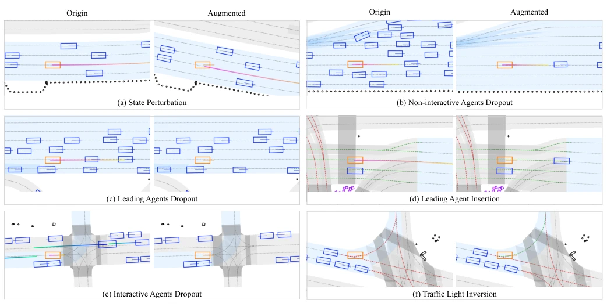
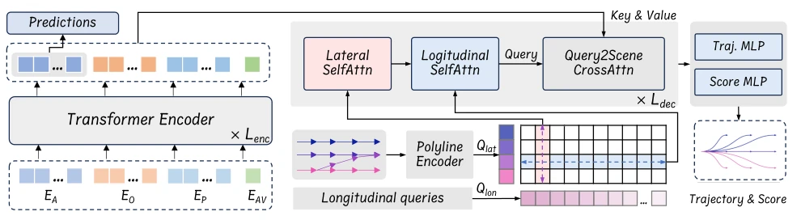
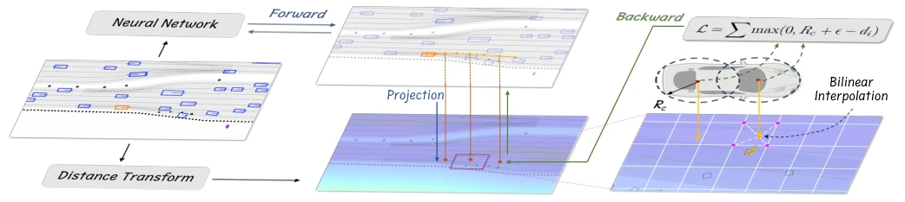
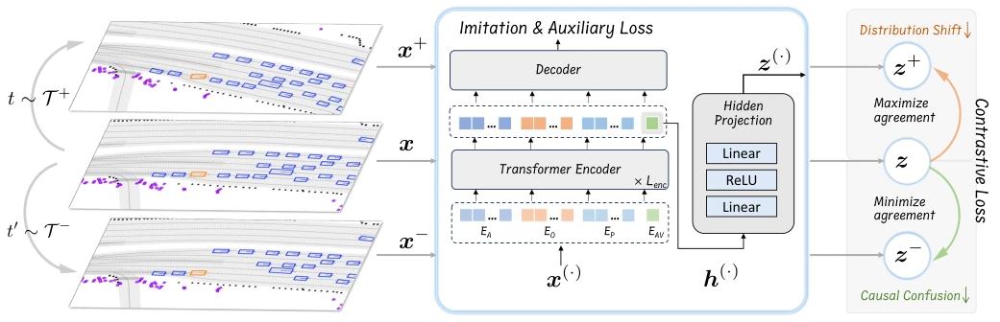
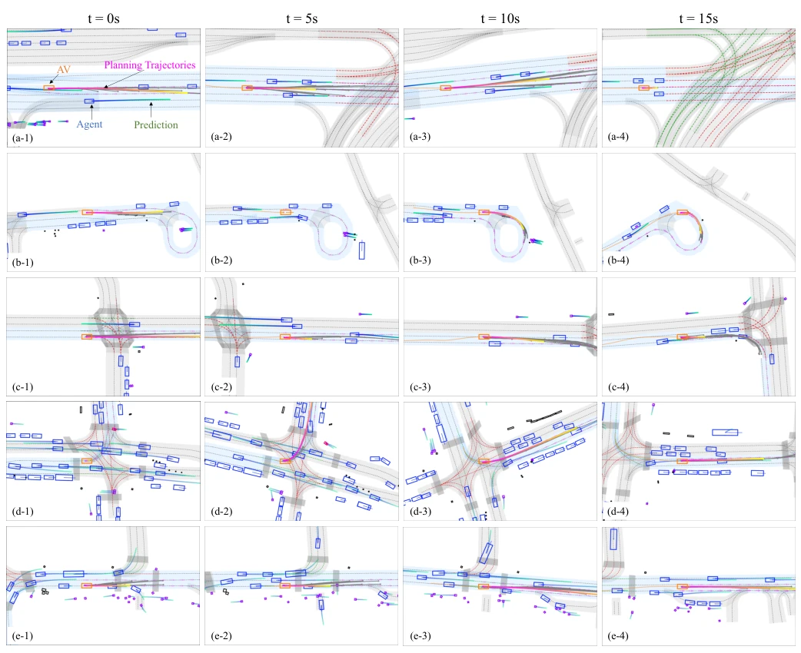

The name "PLUTO" is quite ambitious, directly aiming to "push the limits". To be honest, on the highly competitive nuPlan leaderboard, learning-based planning managing to defeat rule-based experts like PDM is indeed worthy of applause. However, does it win through "pure" imitation learning? Not necessarily. It employs a hybrid post-processing module, using a rule-based evaluator to score the neural network; does this count as an "open-book exam"? Architecturally, separating and then fusing lateral and longitudinal queries is quite clever, solving the problem where previous models could only follow cars but not change lanes. The auxiliary loss uses differentiable interpolation instead of rasterization; efficiency is improved, but essentially it still adds constraints. Most interestingly, contrastive learning employs a bunch of positive and negative sample augmentations, attempting to make the model understand causality, not just blindly copying homework. Overall, it is a solid engineering improvement, but still far from true end-to-end black-box decision-making, as it still relies on rules as a safety net; while safety is guaranteed, generalization still needs observation.
Although learning-based planning is scalable, it still lost to the rule-based PDM [2] in the nuPlan 2023 challenge. The core pain point lies in pure imitation learning not being robust enough. First, models tend to learn "shortcuts", such as decelerating when seeing the car ahead slow down, rather than because of a red light [10]. Second, distribution shift issues are severe; training and testing environments are inconsistent, leading to error accumulation [3]. Furthermore, existing auxiliary loss calculations either rely on heatmaps [5] or require differentiable rasterization [9], which are inefficient and resolution-limited for modern vector-based models, making it difficult to handle complex scenarios. Additionally, the lack of lateral behavior modeling leads to poor lane-changing ability, unable to flexibly respond to obstacles [3]. PLUTO attempts to solve these persistent issues from three dimensions: architecture, loss calculation, and training framework, aiming to make learning-based planning truly possess practical value, no longer just a toy in simulation.

Fig. 4. Exemplary scenarios of the proposed data augmentations. In each group, the figure on the left denotes the origin scenario and the right one shows the augmented scene. AV is marked in the orange, other vehicle agents are in blue, and dash-colored lines on the lanes denote the traffic light status. (a)-(b) belongs to the positive augmentations T + and (c)-(f) are negative augmentations T −.
PLUTO overall adopts a "Perception-Planning" mid-to-mid architecture. After encoding, inputs enter a Query-based decoder. The innovation lies in Query design: lateral uses reference lines to generate Queries, longitudinal uses learnable Embeddings; through factorized self-attention fusion, complexity is reduced from O(N^2) to O(N), balancing computational efficiency and behavioral diversity. Auxiliary loss calculation is another highlight; instead of converting trajectories into images, it uses differentiable interpolation to directly query cost maps (e.g., ESDF), achieving batch-wise efficient computation and supporting high resolution. The training framework introduces Contrastive Imitation Learning (CIL), using positive and negative sample augmentations (e.g., state perturbation, car insertion, traffic light reversal) to let the model distinguish causality and avoid learning biases. Finally, after outputting multi-modal trajectories, instead of directly selecting the highest score, it undergoes Top-K selection, combined with a rule-based evaluator (considering TTC, comfort, etc.) and closed-loop simulation for secondary scoring to select the final trajectory, ensuring safety.

Fig. 1. The architectural overview of the PLUTO model is presented in this section. The model initiates lateral queries Qlat using a polyline encoder based on adjacent reference lines. Simultaneously, longitudinal queries Qlon are established as learnable embeddings. These queries undergo a fusion process via factorized lateral-longitudinal self-attention layers. This integration serves as a basis for the subsequent decoding of trajectories and their associated scores.

Fig. 2. Illustration of the proposed auxiliary loss computation method. Initially, the trajectory produced by the neural network is mapped onto the image space associated with the cost map. Subsequently, the cost value is obtained via bilinear interpolation and employed in the formation of the loss function. Given the differentiable nature of all processes involved, it is feasible to incorporate auxiliary tasks directly into the framework, allowing for end-to-end training.

Fig. 3. Illustration of the proposed contrastive imitation learning (CIL) framework. For any input data, we apply two data augmentation functions from different augmentation modules (t ∼T + and t′ ∼T −) to obtain a positive sample and a negative sample. The projected latent embeddings z(·) are used to calculate the conservative loss which maximizes the agreement between z+ and z and minimizes the agreement of z−and z.
Experiments are based on the nuPlan dataset, using the Val14 benchmark for testing. Compared rule-based (PDM [2]), pure learning-based (PlanTF [3]), and hybrid methods. The main metric is the closed-loop score (NR-score), containing 7 sub-metrics such as no-fault collision, TTC, drivable area compliance, etc. Results show PLUTO surpassed PDM-Closed on both R-score and NR-score, becoming the first learning-based method to defeat a top rule-based planner on nuPlan. Ablation studies verified the effectiveness of the CIL framework, auxiliary loss, and architecture design. Notably, it used closed-loop simulation evaluation, rather than open-loop prediction, which is closer to actual deployment. Although a rule-based evaluator was introduced, the overall end-to-end training process remains efficient, proving the feasibility of hybrid strategies in safety-critical scenarios and providing new ideas for future planner design.

Fig. 5. Qualitative results of closed-loop planning for five representative scenarios from the test set. Each scenario (every row) lasts 15 seconds and we take 4 snapshots with a 5-second interval. Purple dash arrows denote the reference lines, the light blue lanes denote the global routing plan and other important legends are marked in Fig. a-1. It is recommended to refer to our project website for more vivid videos.